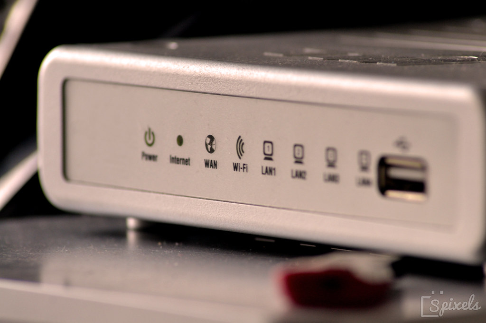
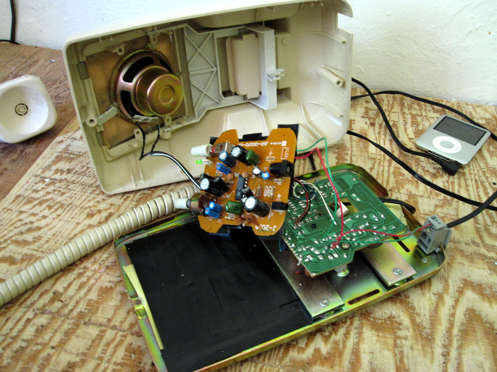
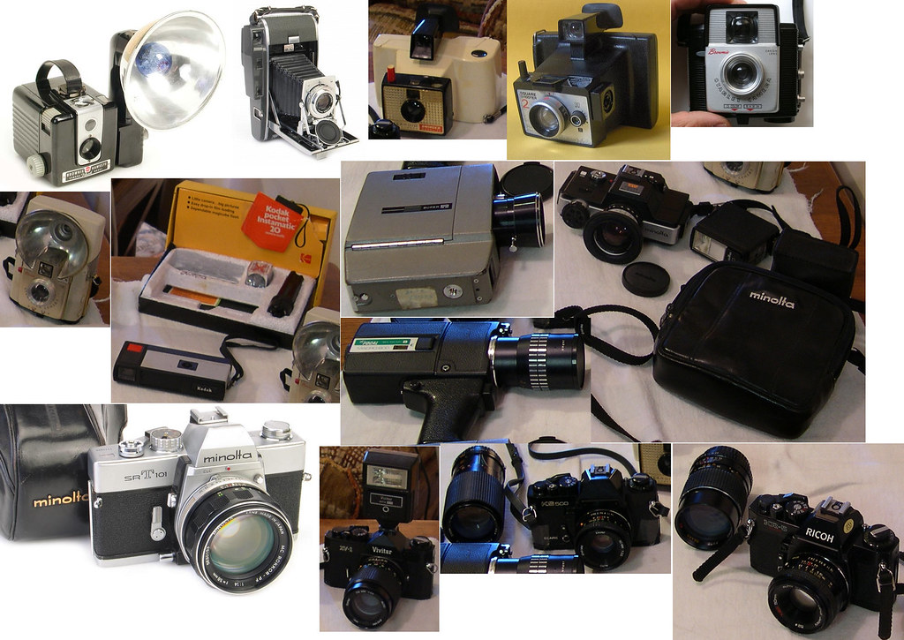

【2026年】一人暮らし 応援 新生活 ギフトに喜ばれるプレゼント5選｜友達別おすすめ
一人暮らしを始める友達を応援するためには、心遣いを込めたギフトを贈ることが大切です。新生活を始める際に必要なアイテムや、日々の生活を豊かにしてくれるものなど、さまざまな選択肢があります。
この記事では、一人暮らしを始める友達へのギフトアイデアを紹介します。新生活を応援するためのプレゼント選び方のポイントや、おすすめ商品をご紹介します。
選び方のポイント
一人暮らしを始める友達へのギフトを選ぶ際には、相手の趣味やライフスタイルを考慮することが重要です。例えば、料理が好きならキッチン用品、読書が好きなら本や書籍関連のアイテムなど、相手の興味や嗜好に合ったものを選ぶと喜ばれるでしょう。
また、実用的で日々の生活に役立つアイテムもおすすめです。

1. 名入れタンブラー(サーモス・スタンレー)
¥3,000〜¥5,000
名入れタンブラーは、相手の名前やメッセージを入れることができます。個性的でユニークなギフトになります。

2. ポータブルWi-Fiルーター(ノキア)
¥8,000〜¥12,000
ポータブルWi-Fiルーターは、移動中や新しい環境でインターネットにアクセスする際に便利です。

3. 高品質スピーカー(ソニー)
¥5,000〜¥10,000
高品質スピーカーは、音楽を楽しむ際に最高のサウンドを提供します。

4. デジタルカメラ(ニコン)
¥10,000〜¥20,000
デジタルカメラは、特別な瞬間を記録するために最適なギフトです。
5. 高級ブランドウォッチ(シチズン)
¥20,000〜¥50,000
高級ブランドウォッチは、相手の個性やスタイルを引き立てる優れたギフトです。
おすすめギフト
以下に、一人暮らしを始める友達へのおすすめギフトを紹介します。
ギフトの選び方のコツ
ギフトを選ぶ際には、相手の個性や好みを考慮することが大切です。
ギフトのプレゼント方法
ギフトを贈る際には、相手へのメッセージや気持ちを伝えることが重要です。
Okuriteでは、贈る相手やシーンに合わせて
ぴったりのギフトを簡単に探せます。
まとめ
一人暮らしを始める友達へのギフトを選ぶ際には、相手の趣味やライフスタイルを考慮することが重要です。実用的で日々の生活に役立つアイテムや、個性的でユニークなギフトなど、さまざまな選択肢があります。
この記事で紹介したギフトアイデアを参考にして、一人暮らしを始める友達を応援しましょう。新生活を始める彼らへのサプライズギフトは、心から喜ばれること間違いなしです。